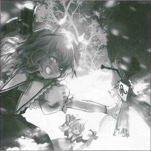
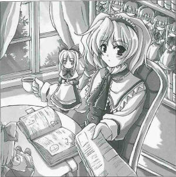

Large Number of Straw Effigies Found in Forest Behind Shrine

On X the Xth, a great quantity of human-shaped dolls made from straw were found nailed to trees behind the shrine.
The act of affixing human-shaped dolls to trees where others can't see them is an ancient ritual.
It was a surprise to see this still being practiced in modern times.
However, calling them mere dolls is not an accurate depiction of their craftsmanship. They were practically works of art.
I wanted to learn more about the craftsman bringing this ancient tradition into the present.
Since I first had to ascertain their identity, I conducted a stakeout over the area behind the shrine.
After three days, the dollmaker Alice Margatroid (magician) finally appeared.
Ms. Margatroid was happy to give me a brief statement despite her surprise.
These straw effigies are a type of doll.
You can't cut any corners while making them.
So, when do you think their finest moment is?
It goes without saying that it's when they're nailed to a tree.
That's why I secretly come here to put them up.
The Still-Living Tradition and The ArtisanThe artisan began affixing the figures to the trees using nails.
This time, I tried to ask why she decided to use such relatively minor traditional artform such as straw figures.
Obviously, because they say if you make one according to certain rules, you can place a curse on someone's soul.
I believe that led to the creation of the doll.
People ask why dolls are in the form of humans. I believe it's because it allows for a mystical connection to a subject.
If you pierce the effigy with a nail, the subject will feel pain as well.
If I can understand this dynamic better, I believe I can come a step closer to my goal of creating an independently moving doll.
That's why I'm creating these straw figures.
Oh, it's not like I have a grudge on anyone, honestly.
And so the artist began hammering the dolls again.
Though she said it was only for research, she returned to her performance so vigorously and with such a terrifying expression that I decided not to bother her any further and ended my questioning.
Traditional crafts such as this are lost as the ages pass.
The only ones who can preserve them are not the humans, who try to hide them, but youkai.
This is because it's easier for youkai, who often live alone for long periods of time, to leave remnants of the past as they were in olden days than it is for the humans, whose society can change in the blink of an eye.
To all youkai living today, perhaps it would be best not only to keep an eye on the future, but to occasionally stop and turn to examine the past.
Alice 
Oh, no. You saw me?
Aya
I did, and I even interviewed you.
Alice
It really won't work if I'm seen nailing the dolls to the trees. And I went to all that work picking just the right place and time.
Aya
I had been hiding for three days.
Alice
So that's why the effects were so weak...
Aya
The... effects?
Alice
Oh, nothing. So, what did you come for today?
Aya
There were some things I didn't have the chance to ask you, so I thought I'd come and write an article about your workshop while I was at it. I'd really appreciate it.
Alice
My workshop? Well, I suppose. I've been meaning to do some cleaning, so be careful on your way in.
Aya
...You certainly have a lot of dolls. Did you make them all yourself?
Alice
Well, not all of them, I think, but most of them are my work.
Aya
I think I asked you something similar the other day, but the dolls you have here look much more like your subjects than the straw ones, don't they?
Alice
Well, it's not just about how close the likeness is to the original. For example, if I made a doll of you and did something to it, then I've just done something to a doll, right? But what if it was to a piece of paper with your name on it? It's indirect, but doesn't that signify you, instead?
Aya
I see, so in other words, when you use straw dolls, it's like you're not pounding nails into the dolls, but into the person the dolls represent.
Alice
Well, a piece of paper with somebody's name on it isn't as useful as if you've got a bit of their hair, or something like that. But you know, it's really not like I'm holding a grudge against anyone.
Aya
Just who were those dolls of?
Alice
Let's go onto the next question now.
Aya
Okay, okay, I understand, so please put down that hammer and those nails.
Alice
So, where were we?
Aya
W-Well, let's see... Can you please tell us about your stated goal about an independently moving doll?
Alice
I'm sure I've seen something like that, a long time ago. An independently moving and thinking doll. I've poured my soul into making one, but I've never been successful. I mean, it's easy enough to make a doll that will do something if I command it to, but beyond that... there's just so much more I need to learn.
Aya
Have you really seen such a thing as a doll that thinks and moves on its own?
Alice
Who made it, and how? It certainly appeared to be moving by its own devices. In any case, I'll have to continue my research until I succeed. It looks like it'll be a long road.
Aya
Thank you for your time and cooperation.
Profile:
Alice Margatroid
Though she doesn't look any different from a human, since she is a member of the race of magicians, she is not human.
As she is an avid collector like Marisa, a large number of dolls and other magic items are scattered throughout her house.
Appearances:
Perfect Cherry Blossom, Immaterial and Missing Power, Imperishable Night